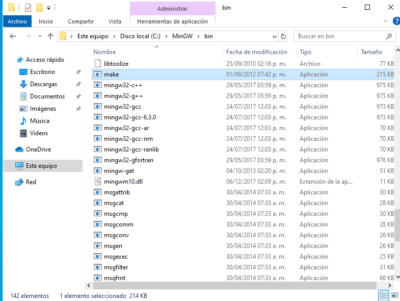

CH55x with SDCC and Windows
Compiler Installation
Follow the steps below to install the necessary tools
- Installing Git for Windows
Download and install Git for Windows from the official Git website.
- Installing SDCC
Download and install the latest version of SDCC. You can find the latest version on the SDCC downloads page. here a alternative
- Installing MinGW
Install MinGW, which is a set of tools for software development on Windows. You can download the installer from the official MinGW website. here a alternative
- Installig Zadig
Download the latest version of Zadig. You can download in a official website.
Configuring MAKE
Remember that for Windows operating systems, an extra step is necessary, which is to open the environment variable -> Edit environment variable:
C:\MinGW\bin
Locate the file

Rename it:
{kind=link}
Warning
Sometimes, it is necessary to create a copy of the file and rename it to make.exe.
path:
C:\MinGW\bin\make

Install pyusb
Verify the installation with python –version.
If not installed, download and install: - Python
Use pip for install py usb:
pip install pyusb
Update driver
The current loading tool can utilize the default driver and coexist with the official WCHISPTool. In case the driver encounters issues, it is advisable to switch the driver version to libusb-win32 using Zadig.